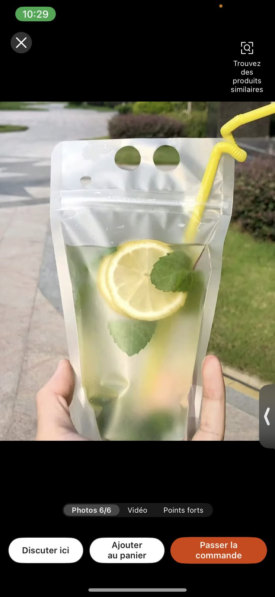
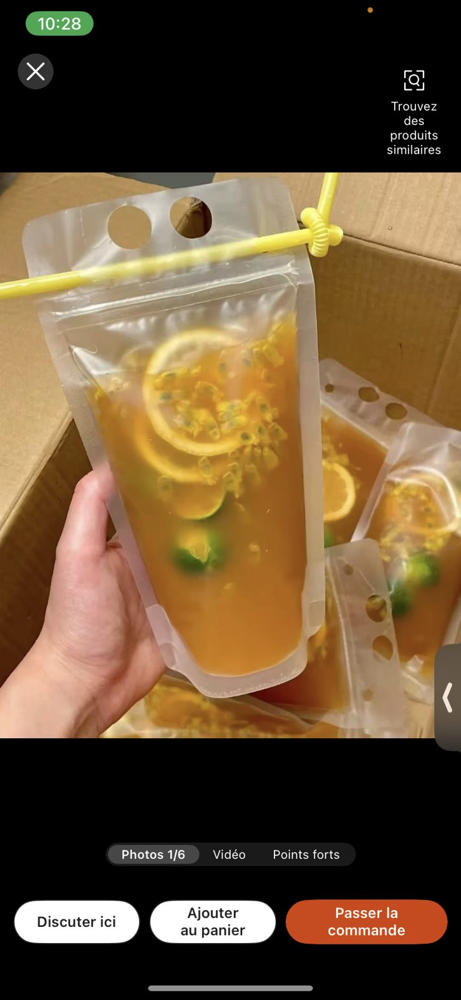
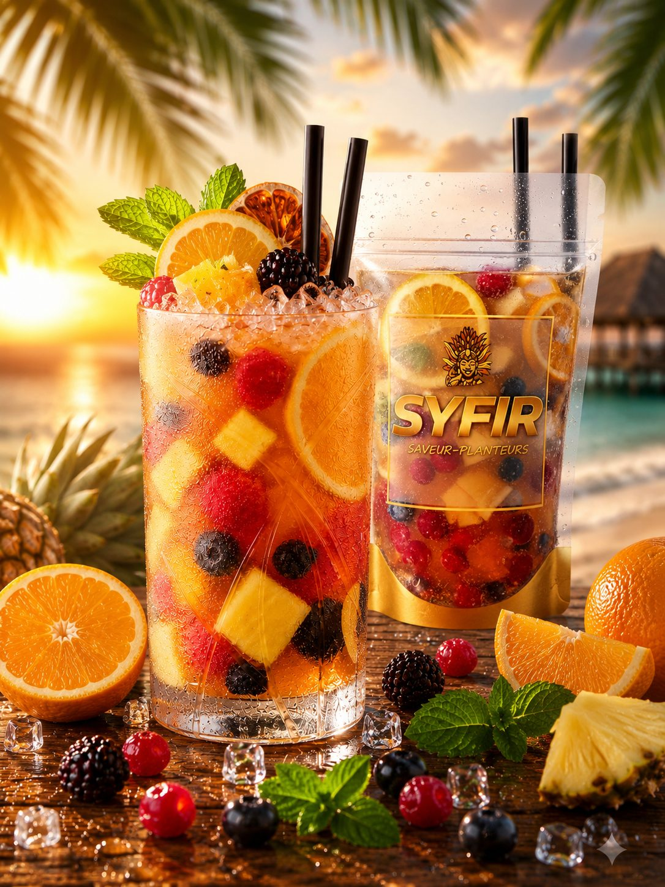

Syf TV
La chaîne des moments.
Ambiances, aftermovies, soirées — identifie #SYFIR et passe à l'antenne.
Syf TV
Ambiances, aftermovies, soirées — identifie #SYFIR et passe à l'antenne.

La lumière tombe, la fête commence.

L'ambiance
Pas de mise en scène. Des soirées, des rires, du sable et des verres qui se lèvent.
Moments
Pris sur le vif, pochette en main. Identifie #SYFIR pour rejoindre la grille.



Événements & Fêtes
Beach parties, rooftops, festivals, soirées privées — réserve tes billets pour les expériences SYFIR, ou organise la tienne.